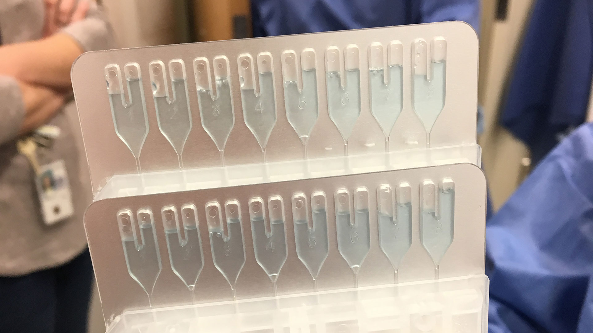
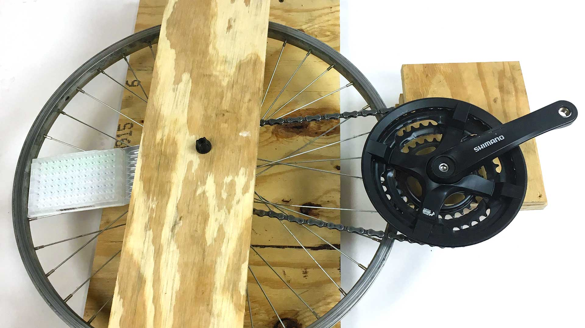
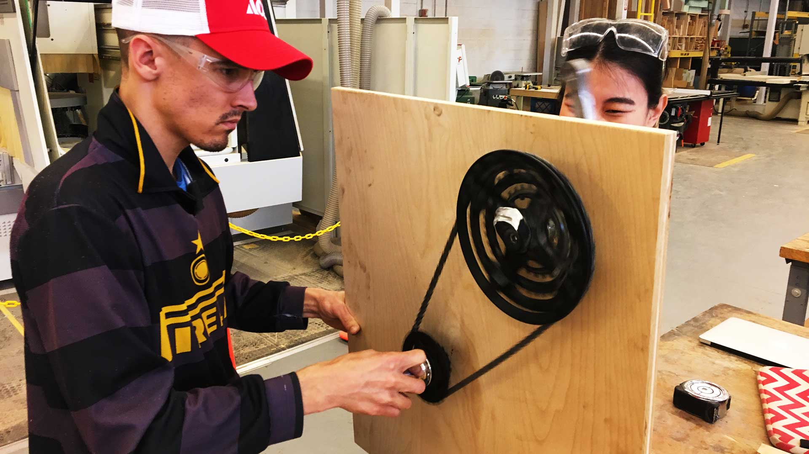

cdc centrifuge
address the needs of stakeholders through the design of a specialized centrifuge alternative
Our first-year Masters graduate studio tackled a project at the start of 2018 to co-ordinate with the Centers for Disease Control here in Atlanta. They came to us looking for a lower cost, reliable centrifuge that suited their specific needs and operation
in locations across the world.
Working within our team of three members, we organized the seven-week long project into three main phases: research, concept development, and fabrication and concept realization. At the end, we presented our centrifuge prototype to representatives at the CDC along with our insights from the design project.
Working within our team of three members, we organized the seven-week long project into three main phases: research, concept development, and fabrication and concept realization. At the end, we presented our centrifuge prototype to representatives at the CDC along with our insights from the design project.
process
Research

The first step was our research phase: understanding the context of the issue, problems of their current centrifuge, existing solutions, and crafting a design brief. To gather this information, we conducted in-person visits to CDC labs, direct observation
of the existing process, and unstructured interviews with lab technicians.
We came to understand that our contacts were working with Children Health and Mortality Prevention Surveillance Network (CHAMPS). Their goal is to investigate why children under the age of 5 around the world are dying, with the ultimate goal of using their data to inform policy decisions.
Their main tool to gather this data is called the TaqMan Array Card. These cards are especially useful for surveillance because a single sample can be tested against upwards of 20 pathogens at the same time. This means more data generated from fewer samples, from spinning just one card. We observed the sample loading process, the spinning stage, as well as the analysis of the card once the card was already spun.
The existing centrifuge that spins these cards had capabilities beyond what was needed in the scope of their project and was prohibitively expensive – with costs up to five figures. This made it so that it was difficult to source centrifuges to partnering labs in Sub-Saharan African and South Asia. These machines were also reliant on power which meant the entire process was halted here during power outages. It was also prone to breakdowns, meaning specialized equipment from their specific manufacturer had to be flown out and/or installed in person by a specialist – with machine downtimes ranging from weeks to months. Samples were time sensitive, and therefore removing these obstructions in the process would greatly benefit their goals.
Existing centrifuges were not retro-fitted to spin cards. We looked at possible analogues ranging anywhere from stationary bikes, to rowing machines, and fans. Only then did we present our research and problem statement through a presentation for the CDC, organizing our research through diagrams like a stakeholder map, user flows, and a journey map.
Concept Development

We started by generating thumbnail sketches of possible forms for our centrifuge. This was mostly general ideas of overall form and rough ideas of interaction possibilities. Instead, the main driving force behind our blue-sky ideation phase here was solving
the problems that were plaguing the existing problems.
We then dived into different methods to generate the spinning motion, breaking down analogue components and interaction possibilities into a morphological matrix to organize our possible options. We settled on three initial prototypes, proposing a hand-drill based centrifuge that featured replaceable batteries, a modified box fan centrifuge, and a bike chain-driven centrifuge. We communicated these three designs to our stakeholders and received feedback, informing our next stage of concept development.
We decided to focus on our hand powered, chain-driven centrifuge concept, as it was a low cost, low maintenance alternative that provided reliable, non-power reliant results. The basic design was a lightweight blade that held the card inside, while being spun with a hand crank on the opposite side. A user would start spinning the device, a built-in timer would trigger once the blades started spinning, and a tachometer measuring the RPM would display in front of the user. When the timer ran out, the user knew the card was ready to go.
We performed formative usability testing using actual bike wheels, gears, and chains and fixing cards loaded with samples to recreate the spinning. We tested across a number of variables that included, among others, orientation, braking pattern, blade length, and RPM/crank speed.
The next step was generating a more focused morphological matrix that helped hone in on interaction details. For example, hollowed segments with closing doors on the spinning blade provided a quick method to insert and fasten a card. At the same time, designing effective but non-intrusive housing ensured biohazard safety and reduced the risk of accidents with regards to the blades that held the card. Another round of sketching helped develop and reinforce these ideas.
Certain challenges during this stage were solved using creative solutions. For example, chain tensioning with an earlier concept became an issue – especially because the chain began to sag with the horizontal orientation of the spinning mechanism. Testing helped verify that an upright setup would consistently produce the same results. This new design also helped save counter space – a valuable commodity in many labs.
Fabrication and concept realization

Given the short timeframe of the entire project from research to final presentation (about seven weeks), we could not create a physical model of our ideal concept. Instead, we shot for a works-like model that could take an actual loaded card and produce
analysis-ready cards. In conjunction with our CAD model and using plywood and modified bike parts, we presented stakeholders our concept of a low cost, easily serviceable, and powerless centrifuge right before the end of February.
A process book is available in the gallery for more details and pictures of the entire process.
gallery